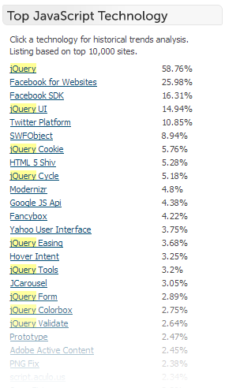
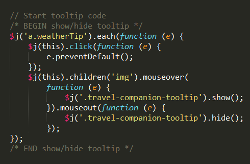
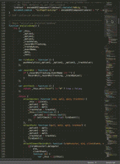

Backbone and Underscore: jQuery's New Friends
K.Adam White • @kadamwhite
WordPress & JavaScript

UpperCamelCase 4lyf!

logo.js community logo by Chris Williams

jQuery is Everywhere

Used on 55% of the top 10,000 websites
7 of the top 20 most-used libraries are jQuery plugins—jQuery UI is in spot #4
Why jQuery?
Finding Things
jQuery's CSS selector-based query syntax makes finding elements on your page easy!
$('.class div', '#li') // div children of .class, within #li
.find('a') // all link elements undernead those divs
.is(':visible') // Exclude any hidden links
.nextAll('input[type="text"]') // All following siblings,
// limited to text inputs
.first(); // The first of those inputs, like :first-child
The ability to "chain" selector commands is the core strength of jQuery's API
Aside: There's a great talk from John Resig on jQuery selector performance up on WordCamp.tv—If you use jQuery regularly, check it out!
Finding Things
Don't repeat yourself! Save references to important objects so you can return to them later
var $lastWidget = $('.widget').last();
// ...
$lastWidget.addClass('most-awesome-widget');
// ...
$lastWidget.find('.widget-title').text('I am beautiful');
Changing Things
Add or remove classes...
// Rotate and re-color a button using existing CSS classes
$('.btn').addClass('rotated green').removeClass('blue');
Show or hide content...
// Hide the "Continue Reading" link
$('.read-more-link').hide();
// Reveal the expanded content
$('.full-content').slideDown();
Once you have a reference to the object (once you've found it), you can do almost anything
Events
Interact with your site visitors!
// Whenever the .trigger button is clicked,
// toggle the visibility of that post's content
$('.post').on('click', 'a', function(event) {
event.preventDefault();
$(this).parents('.post').find('.content').slideToggle();
});
// When the user hovers over a link, make it red
$('a').hover(function() {
$(this).addClass('red'); // mouse over
}, function() {
$(this).removeClass('red'); // mouse out
});
Your site can react to keypress events, mouse clicks or movement, buttons, forms, scrollbars, and more
Retrieving Things
jQuery also comes with a strong set of AJAX methods for retrieving data and files from your server
// Load the contents of 'content.html' into the last widget
$lastWidget.load('ajax/content.html');
// Load a script used only on one page of your site
$.getScript('/talks/js/jquery.ui.min.js', function callback() {
$.dialog();
});
// Get arbitrary data from the server
$.ajax('some/data/you/want', function(data, status) {
/* Use loaded data */
});
Note: Due to browser security restrictions on JavaScript, you usually can't
retrieve content or data from third-party servers
And Look Good Doing It
Reacting to events, finding objects within the DOM (the structure of your webpage), changing content, getting data via AJAX... these things are all harder to do without jQuery because of these:

jQuery behaves the same way in all browsers, "normalizing" events, selectors, errors, and more
History
In the beginning...

Prototype did a lot of what jQuery does (It even used '$')
It works by modifying JavaScript's native prototypes
Eventually, Prototype just didn't scale
@since 2.2.0
jQuery was added to WordPress on January 27, 2007 by Matt Mullenweg:

Soon followed by a trac ticket to switch from Prototype to jQuery in the Admin
The Whole Family
Prototype is still there (script-loader.php L108):
// WordPress no longer uses or bundles Prototype or
// script.aculo.us. These are now pulled from an external source.
$scripts->add( 'prototype',
'//ajax.googleapis.com/[...]prototype.js',
array(), '1.7.1'
);
However, of the 134 scripts loaded in script-loader.php, 87 scripts (over 60%) relate to jQuery
Limitations
jQuery's focus is one of its chief strengths. jQuery.org lists the four things jQuery is designed to do:
HTML document traversing
Animating
Event handling
Ajax interaction
If it ain't on that list, jQuery might not be the best tool
jQuery does not tell you how to organize your code
Callback Soup
The deeper the nesting, the harder to maintain
$.ajax({ url: "/some/data.json",
success: function( data ) {
$.ajax({ url: "/api/get_post/?post_id=" + data.id,
success: function( d ) {
data = d; // ...
}
});
}
});
When your callbacks have callbacks, it might be time to question your code's structure
Antipattern example adapted from Julian Aubourg's presentation From Callback Soup to Deferreds
Huge, Disorganized Files
As you add functionality jQuery files tend to get unwieldy, because jQuery does not give you any real guidance on how to organize your code
|  |  |
Easy to write yourself an unmaintainable thousands-of-lines monstrosity, difficult to maintain it later!
Beyond jQuery
21170: JavaScript Actions & Filters
Why not use custom jQuery events?
Custom jQuery events are great when we need to trigger actions on a DOM element. Triggering plain events on the body element (or any other hidden element) is not performant — every jQuery event normalizes an DOM Event object, which we then completely ignore.
- @koop
Beyond jQuery
21390: Upload/Insert media revamp
...backbone's models, collections, and views are pretty much exactly what we need to be able to make media work as awesome as we're aiming for
nacin, WordPress dev chat, 8/22/12
Backbone.js

Backbone
Backbone.js gives structure to web applications by providing models with key-value binding and custom events, collections with a rich API of enumerable functions, views with declarative event handling, and connects it all to your existing API over a RESTful JSON interface.
MVC
Model, View, Controller
Separation of Concerns
<h1 id="heading" style="font-weight:normal; text-align: center; font-size:150px; line-height:1em; margin: 50px; font-family:papyrus,comic-sans,monospace; color: lightPink;">TITLE</h1>
<a href="javascript:;" style="display: block; text-align: center;" onclick="document.getElementById('heading').innerHTML = 'NEW TITLE'">Click Me to do stuff</a>
Have you ever written this code?
Have you ever tried to modify it later?
Solution
HTML for content, CSS for appearance, JavaScript for interaction
In MVC, Models hold your data (content)
Views describe how it appears (appearance)
Controllers coordinate between the two (interaction)
Backbone
Not classic MVC
Model, View, Collection (a group of models)
Models
var myApp.myModel = Backbone.Model.extend({});
Getting data for your models
The data for a front-end application has to come from somewhere
You can "bootstrap" it onto the page, or you can use AJAX to load it directly
JSON
JavaScript Object Notation
Easy, lightweight format
Smaller than XML, better than XML, sexier than XML!
WordPress JSON API plugin
JSON is the twinkies of APIs
REST
"Relational state transfer"
Essentially, a way to use verbs and nouns to describe the data you need
So what? We're running WordPress, not Node.js on some NoSQL nonsense...
Jetpack 1.9 Released Yesterday

-Matt Mullenweg's announcement post
WordPress.com REST API

REST API Resources
- Official API documentation
- Explore the REST API on Developer.WordPress.com
- This list will grow, these are early days yet
Views
Rendering Your Data
This is another thing jQuery isn't super good at
$('.post').html('<h2>' + title + '</h2><p>' + content + '</p>');
Can be slow
Again, difficult to maintain
Don't mix HTML into your JS
JavaScript Templating
Render views without conflating HTML and JavaScript!
HTML with placeholders
<li><a href="<%= address %>"><%= content %></a></li>
Templating Demo
var tmpl = null;
jQuery.ajax({
url: '/wp/wp-content/plugins/wcpvd-backbone-demo/template.html',
dataType: 'html',
success: function(data) {
tmpl = _.template(data);
console.log('Template is ready');
}
});
Collections
I don't actually have any slides about collections
Underscore.js Playtime!
Further Reading: Backbone
Further Reading: Underscore
More Information Than Your Body Has Room For
- JavaScript Weekly
- Web Development links collection
- A (small, highly-incomplete) list of web developers on twitter
- TODO: Add more links
THANK YOU
talks.kadamwhite.com/wcpvd12
K.Adam White / kadamwhite.com
Slides made with Reveal.js